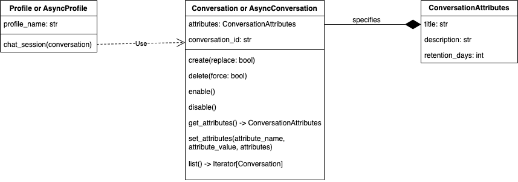

Conversations in Select AI represent an interactive exchange between the user and the system, enabling users to query or interact with the database through a series of natural language prompts.
A conversation is stored in the database and identified by a
conversation_id. Pass that conversation to Profile.chat_session() or
AsyncProfile.chat_session() when follow-up prompts should use prior prompts
as context. This is useful for chat workflows where the user asks a question,
then asks follow-up questions such as “explain that further” or “show another
example”.
Use conversations when you need context across multiple prompts. For one-off
prompts, call profile methods such as chat(), show_sql(), or
narrate() directly without creating a conversation.
The usual lifecycle is:
Create
ConversationAttributeswith a title, optional description, retention period, and conversation length.Create a
ConversationorAsyncConversationobject.Use the conversation in
profile.chat_session(...).List, fetch, or update the conversation metadata when needed.
Delete the conversation when the stored history is no longer needed.
1. Conversation Object model¶

2. ConversationAttributes¶
ConversationAttributes controls the metadata and retention behavior for a
conversation:
Attribute |
Use |
|---|---|
|
Human-readable conversation title. If omitted, the default is
|
|
Optional description of the conversation topic. |
|
Number of days to keep the conversation in the database from its
creation date. Use |
|
Number of prompts retained in the conversation context. The default is
|
Example:
import datetime
attributes = select_ai.ConversationAttributes(
title="Sales analysis",
description="Follow-up questions about quarterly sales",
retention_days=datetime.timedelta(days=14),
conversation_length=20,
)
- class select_ai.ConversationAttributes(title: str | None = 'New Conversation', description: str | None = None, retention_days: timedelta | None = datetime.timedelta(days=7), conversation_length: int | None = 10)¶
Conversation Attributes
- Parameters:
title (str) – Conversation Title
description (str) – Description of the conversation topic
retention_days (datetime.timedelta) – The number of days the conversation will be stored in the database from its creation date. If value is 0, the conversation will not be removed unless it is manually deleted by delete
conversation_length (int) – Number of prompts to store for this conversation
3. Conversation API¶
- class select_ai.Conversation(conversation_id: str | None = None, attributes: ConversationAttributes | None = None)¶
Conversation class can be used to create, update and delete conversations in the database
Typical usage is to combine this conversation object with an AI Profile.chat_session() to have context-aware conversations with the LLM provider
- Parameters:
conversation_id (str) – Conversation ID
attributes (ConversationAttributes) – Conversation attributes
- create() str¶
Creates a new conversation and returns the conversation_id to be used in context-aware conversations with LLMs
- Returns:
conversation_id
- delete(force: bool = False)¶
Drops the conversation
- classmethod fetch(conversation_id: str) Conversation¶
Fetch conversation attributes from the database and build a proxy object
- Parameters:
conversation_id (str) – Conversation ID
- get_attributes() ConversationAttributes¶
Get attributes of the conversation from the database
- classmethod list() Iterator[Conversation]¶
List all conversations
- Returns:
Iterator[Conversation]
- set_attributes(attributes: ConversationAttributes)¶
Updates the attributes of the conversation in the database
The synchronous API is used with select_ai.connect() or
select_ai.create_pool(). Important methods:
Method |
Use |
|---|---|
|
Create a database conversation and return its |
|
Build a |
|
Read conversation metadata from the database. |
|
Update the title, description, retention period, or conversation length. |
|
Iterate over conversations visible to the current user. |
|
Drop the conversation. Use |
Profile.chat_session(conversation=..., delete=False) is a context manager.
If the conversation has attributes but no conversation_id, the session
creates it automatically. While the context manager is active, every
session.chat(...) call passes the same conversation_id to Select AI, so
follow-up prompts can use the conversation history. If delete=True, the
conversation is deleted when the session exits.
3.1. Create conversation¶
import os
import select_ai
user = os.getenv("SELECT_AI_USER")
password = os.getenv("SELECT_AI_PASSWORD")
dsn = os.getenv("SELECT_AI_DB_CONNECT_STRING")
select_ai.connect(user=user, password=password, dsn=dsn)
conversation_attributes = select_ai.ConversationAttributes(
title="History of Science",
description="LLM's understanding of history of science",
)
conversation = select_ai.Conversation(attributes=conversation_attributes)
conversation_id = conversation.create()
print("Created conversation with conversation id: ", conversation_id)
output:
Created conversation with conversation id: 3AB2ED3E-7E52-8000-E063-BE1A000A15B6
3.2. Chat session¶
Use chat_session() to keep context across multiple chat prompts. The second
prompt in this example can refer to the previous answer because both prompts use
the same database conversation.
import os
import select_ai
user = os.getenv("SELECT_AI_USER")
password = os.getenv("SELECT_AI_PASSWORD")
dsn = os.getenv("SELECT_AI_DB_CONNECT_STRING")
select_ai.connect(user=user, password=password, dsn=dsn)
profile = select_ai.Profile(profile_name="oci_ai_profile")
conversation_attributes = select_ai.ConversationAttributes(
title="History of Science",
description="LLM's understanding of history of science",
)
conversation = select_ai.Conversation(attributes=conversation_attributes)
with profile.chat_session(conversation=conversation, delete=True) as session:
print(
"Conversation ID for this session is:",
conversation.conversation_id,
)
response = session.chat(
prompt="What is importance of history of science ?"
)
print(response)
response = session.chat(
prompt="Elaborate more on 'Learning from past mistakes'"
)
print(response)
output:
Conversation ID for this session is: 380A1910-5BF2-F7A1-E063-D81A000A3FDA
The importance of the history of science lies in its ability to provide a comprehensive understanding of the development of scientific knowledge and its impact on society. Here are some key reasons why the history of science is important:
1. **Contextualizing Scientific Discoveries**: The history of science helps us understand the context in which scientific discoveries were made, including the social, cultural, and intellectual climate of the time. This context is essential for appreciating the significance and relevance of scientific findings.
..
..
The history of science is replete with examples of mistakes, errors, and misconceptions that have occurred over time. By studying these mistakes, scientists and researchers can gain valuable insights into the pitfalls and challenges that have shaped the development of scientific knowledge. Learning from past mistakes is essential for several reasons:
...
...
3.3. List conversations¶
Listing returns Conversation objects with their conversation_id and
metadata. It does not replay the conversation transcript.
import os
import select_ai
user = os.getenv("SELECT_AI_USER")
password = os.getenv("SELECT_AI_PASSWORD")
dsn = os.getenv("SELECT_AI_DB_CONNECT_STRING")
select_ai.connect(user=user, password=password, dsn=dsn)
for conversation in select_ai.Conversation().list():
print(conversation.conversation_id)
print(conversation.attributes)
output:
5275A80-A290-DA17-E063-151B000AD3B4
ConversationAttributes(title='History of Science', description="LLM's understanding of history of science", retention_days=7)
37DF777F-F3DA-F084-E063-D81A000A53BE
ConversationAttributes(title='History of Science', description="LLM's understanding of history of science", retention_days=7)
3.4. Delete conversation¶
Delete conversations that are no longer needed, especially when
retention_days is set to 0 or when the content should not remain in the
database after a session ends. For temporary sessions, prefer
profile.chat_session(conversation=conversation, delete=True).
import os
import select_ai
user = os.getenv("SELECT_AI_USER")
password = os.getenv("SELECT_AI_PASSWORD")
dsn = os.getenv("SELECT_AI_DB_CONNECT_STRING")
select_ai.connect(user=user, password=password, dsn=dsn)
conversation = select_ai.Conversation(
conversation_id="37DDC22E-11C8-3D49-E063-D81A000A85FE"
)
conversation.delete(force=True)
print(
"Deleted conversation with conversation id: ",
conversation.conversation_id,
)
output:
Deleted conversation with conversation id: 37DDC22E-11C8-3D49-E063-D81A000A85FE
4. AsyncConversation API¶
- class select_ai.AsyncConversation(conversation_id: str | None = None, attributes: ConversationAttributes | None = None)¶
AsyncConversation class can be used to create, update and delete conversations in the database in an async manner
Typical usage is to combine this conversation object with an AsyncProfile.chat_session() to have context-aware conversations
- Parameters:
conversation_id (str) – Conversation ID
attributes (ConversationAttributes) – Conversation attributes
- async create() str¶
Creates a new conversation and returns the conversation_id to be used in context-aware conversations with LLMs
- Returns:
conversation_id
- async delete(force: bool = False)¶
Delete the conversation
- async classmethod fetch(conversation_id: str) AsyncConversation¶
Fetch conversation attributes from the database
- async get_attributes() ConversationAttributes¶
Get attributes of the conversation from the database
- classmethod list() AsyncGenerator[AsyncConversation, None]¶
List all conversations
- Returns:
AsyncGenerator[AsyncConversation, None]
- async set_attributes(attributes: ConversationAttributes)¶
Updates the attributes of the conversation
The async API mirrors the synchronous API and is used with
select_ai.async_connect() or select_ai.create_pool_async().
Synchronous API |
Async API |
|---|---|
|
|
|
|
|
|
|
|
|
|
|
|
|
|
4.1. Async chat session¶
Use AsyncProfile.chat_session() in async applications. The conversation is
created automatically when the object has attributes and no conversation_id.
import asyncio
import os
import select_ai
user = os.getenv("SELECT_AI_USER")
password = os.getenv("SELECT_AI_PASSWORD")
dsn = os.getenv("SELECT_AI_DB_CONNECT_STRING")
async def main():
await select_ai.async_connect(user=user, password=password, dsn=dsn)
async_profile = await select_ai.AsyncProfile(
profile_name="async_oci_ai_profile"
)
conversation_attributes = select_ai.ConversationAttributes(
title="History of Science",
description="LLM's understanding of history of science",
)
async_conversation = select_ai.AsyncConversation(
attributes=conversation_attributes
)
async with async_profile.chat_session(
conversation=async_conversation, delete=True
) as async_session:
response = await async_session.chat(
prompt="What is importance of history of science ?"
)
print(response)
response = await async_session.chat(
prompt="Elaborate more on 'Learning from past mistakes'"
)
print(response)
asyncio.run(main())
output:
Conversation ID for this session is: 380A1910-5BF2-F7A1-E063-D81A000A3FDA
The importance of the history of science lies in its ability to provide a comprehensive understanding of the development of scientific knowledge and its impact on society. Here are some key reasons why the history of science is important:
1. **Contextualizing Scientific Discoveries**: The history of science helps us understand the context in which scientific discoveries were made, including the social, cultural, and intellectual climate of the time. This context is essential for appreciating the significance and relevance of scientific findings.
..
..
The history of science is replete with examples of mistakes, errors, and misconceptions that have occurred over time. By studying these mistakes, scientists and researchers can gain valuable insights into the pitfalls and challenges that have shaped the development of scientific knowledge. Learning from past mistakes is essential for several reasons:
...
...
4.2. Async list conversations¶
AsyncConversation.list() is an async iterator.
import asyncio
import os
import select_ai
user = os.getenv("SELECT_AI_USER")
password = os.getenv("SELECT_AI_PASSWORD")
dsn = os.getenv("SELECT_AI_DB_CONNECT_STRING")
async def main():
await select_ai.async_connect(user=user, password=password, dsn=dsn)
async for conversation in select_ai.AsyncConversation().list():
print(conversation.conversation_id)
print(conversation.attributes)
asyncio.run(main())
output:
5275A80-A290-DA17-E063-151B000AD3B4
ConversationAttributes(title='History of Science', description="LLM's understanding of history of science", retention_days=7)
37DF777F-F3DA-F084-E063-D81A000A53BE
ConversationAttributes(title='History of Science', description="LLM's understanding of history of science", retention_days=7)